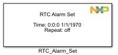
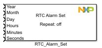
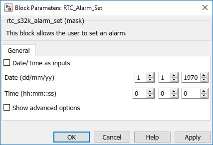
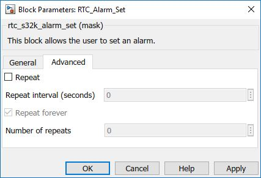

RTC Alarm Set Block
This block allows the user to set an alarm for using the RTC module.
Block Image
 Inputs:
- Date/Time as inputs - checked
- Year (UINT16_T)
- Month (UINT8_T)
- Day (UINT8_T)
- Hours (UINT8_T)
- Minutes (UINT8_T)
- Seconds (UINT8_T)
Outputs:
- None
Parameters and Dialog Box
The block dialog consists of the following tabs:
General
Date/Time as inputs
When unchecked the block sets statically the alarm time with the values from the Date Time boxes. When checked the Date/Time boxes become inactive and the blocks takes Date/Time as inputs.
Time configuration
Sets the initial time for the RTC counter.
- Date - format dd/mm/yyyy
- Time - format hh:mm:ss
Show advanced options
Shows or hides the Advanced options tab.
Advanced
Repeat
When checked, enables editing the parameters for Alarm repeat.
Repeat interval
This field sets the interval time period between repeats.
Repeat forever
When checked, the field repeats the alarm forever.
Number of repeat
This field sets the number of the alarm repeats.
Block Dependency
Block Miscellaneous Details
- None